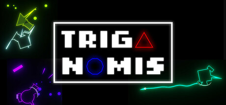

A Unified Agentic Framework for Medical VLMs: Case Retrieval, Reporting, and Visual Question Answering
medical image
medical VLM
case retrievalMS-PIE · QAE
coding agent
report · VQA · dx
now: indoor navigation @ UW Robot Learning Lab
CS student at the University of Washington, working on embodied AI and robot navigation.
andy@uw:~$ cd about
I want to build agents that perceive the world, move through it, and keep learning from it.
Before UW I worked on medical multimodal agents and 3D Gaussian scene reconstruction, and shipped a Steam game, a paper reader, and a lot of mods on the side. I taught myself the math along the way through MIT OCW and Stanford Online.
andy@uw:~$ cat now.txt
andy@uw:~$
andy@uw:~$ cd research
andy@uw:~$ ls projects/

A 2D shooter where you level up and modify your own bot. Concept to Steam release.
Reads research papers with you, explaining jargon at your level.
RL agent for a territory-capture game under partial observability (POMDP).
8-person team shipping student tools. SAT tools hit 60% of upperclassmen.
Trains MS-PIE, a symptom-level encoder for finding similar clinical cases.
andy@uw:~$ git log --oneline
Starting a project on agent capabilities in indoor navigation in Prof. Byron Boots's lab, mentored by Rohan Baijal. Currently reviewing prior work and setting up simulation environments.
RoboMaster auto-aim and navigation for combat and engineer robots; navigation and localization for the fully autonomous sentry robot under ROS2.
Studied SOTA LLM and multimodal architectures (GPT, LLaMA, Qwen, LLaVA, Flamingo) under Dr. Xiaotian Yu and Dr. Xianbiao Qi. Extended LLaVA-Med with grounded segmentation masks for stronger clinical reasoning.
Built an agentic framework that gathers diagnostic evidence for clinicians, unifying medical VLMs, case retrieval, and a coding agent. Designed MS-PIE and the QAE training framework.
Led an 8-member team shipping the club website with AI study tools, the GPE-Hub desktop app, and a translation Chrome extension. Architected the Django backend.
Reconstructed dense street-view scenes from multi-camera video with hierarchical 3D Gaussians for downstream virtual-scene work.
Cardiac MRI diagnosis model combining CNN segmentation, Geometric Visual Similarity Learning, and attention; paired VLMs with ULIP pretraining to explain diagnoses in natural language.
click a row to expand
andy@uw:~$ ./contact.sh
Open to research collaborations and internships in embodied AI, navigation, and agents.